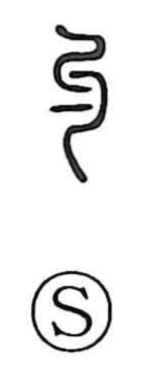

勺

Uncategorized
Kun: hishaku, kumu, wazuka | On: shaku
ladle ・ dipper ・ to ladle ・ a little ・ few
Explanation
A pictograph of a ladle—a spoon-shaped utensil for dipping water and the like. From this image it carries the senses of the hishaku (ladle) and the act of kumu, to ladle. It contrasts with 斗, which also depicts a handled scoop but one large enough to measure grain, whereas 勺 is a small scoop; from that small capacity the meaning extends to “a little” or “few.” The more elaborated form 杓 represents the same utensil with additional strokes, and 酌 expresses the act of ladling out drink, especially liquor.